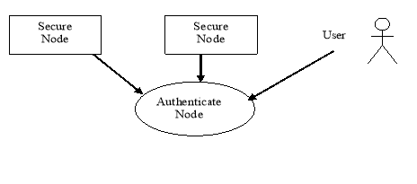
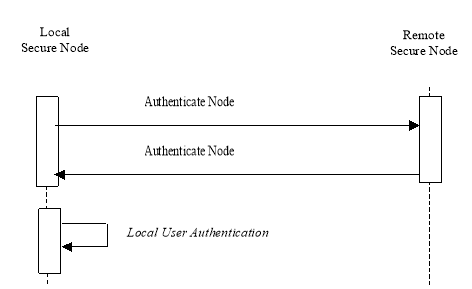

IHE IT Infrastructure (ITI)
Technical Framework
Revision 16.0 – Final Text
This section corresponds to transaction [19] of the IHE ITI Technical Framework. Transaction [ITI-19] is used by the Secure Node Actors
In the Authenticate Node transaction, the local Secure Node presents its identity to a remote Secure Node, and authenticates the identity of the remote node. After this mutual authentication, other secure transactions may take place through this secure pipe between the two nodes.
In addition, the Secure Node authenticates the identity of the user who requests access to the node. This user authentication is a local operation that does not involve communication with a remote node.

Actor: Secure Node
Role: Establish a protocol specific trust relationship between two nodes in a network. Establishes the identity of a user, and authorizes access to the patient data and applications at the node.
Actor: User
Role: Someone who wants to have access to the data and applications available at the node.
DICOM:
IETF:
RFC7525 - Recommendations for Secure Use of Transport Layer Security (TLS) and Datagram Transport Layer Security (DTLS)
ITU-T:
Note: This diagram does not imply sequencing of Authentication Node and Local User Authentication.
Figure 3.19.4-1: Interaction Diagram
The Local Secure Node starts the authentication process with the Remote Secure Node when information exchange between the two nodes is requested. The first transaction shall be the Authenticate Node transaction, and all other PHI transactions performed by IHE actors shall be secure transactions. This authentication process is needed when a secure connection is established.
The Basic Secure Node shall always apply the Authenticate Node process to every DICOM, HTTP, or HL7 connection.
The Authenticate node transaction involves the exchange of certificates representing the identities of the nodes. These identities are used to authenticate the nodes, to inform authorization, and audit logging.
The local organization (e.g., XDS Affinity Domain) will make the choice of what mixture of chain of trust and direct comparison is used to authenticate communications. This may be entirely based on chaining trust to selected CAs, entirely based upon provision of node certificates for direct comparison, or a mixture of both.
Note: The CAs used for ATNA chain of trust will be different than the default browser trusted list of CAs used for authenticating internet web servers. A worldwide CA, such as VeriSign, is not generally trusted to determine which individual nodes within an organization should and should not communicate patient identifiable information.
When Authenticating the Remote Secure Node, the Local Secure Node:
It may reject communications when the certificate validation fails, or may restrict communications to only that which is appropriate for an unidentified other party.
The Secure Node or Secure Application:
The Secure Node or Secure Application:
The Secure Node shall not require any specific certificate attribute contents, nor shall it reject certificates that contain unknown attributes or other parameters. Note that for node certificates the CN often is a hostname, attempting to use this hostname provides no additional security and will introduce a new failure mode (e.g., DNS failure).
The certificates used for mutual authentication shall be X.509 certificates based on RSA key with key length in the range of 1024-4096, where the key length chosen is based on local site policy. Maximum expiration time acceptable for certificates should be defined in the applicable security policy. The IHE Technical Framework recommends a maximum expiration time of 2 years.
The method used to determine whether a node is authorized to perform transactions is not specified. This may be use of a set of trusted certificates, based on some attribute value contained in the certificates, access control lists, or some other method. Using a certificate chain back to an external trusted certificate authority to determine authorizations is strongly discouraged.
When configured for use on a physically secured network, the normal connection mechanisms may be used.
When configured for use not on a physically secured network implementations shall use the TLS protocol, and the following shall be supported: ciphersuite
TLS_RSA_WITH_AES_128_CBC_SHA.
The recommended "well-known port 2762" as specified by DICOM shall be used when the Secure node is configured for use not on a physically secured network. When the secure node is configured for use on a physically secured network, a different port number shall be used, preferably the standard port 104. HL7 does not specify port numbers, but the port number used when configured for use on a physically secured network shall be different than the port number used when configured for use not on a physically secured network.
All Secure Nodes shall be configurable for use on a physically secured network or not on a physically secured network. If Secure Node is configured for physical security, then it may use the non-TLS DICOM port and protocol.
See RFC7525 “Recommendations for Secure Use of Transport Layer Security (TLS) and Datagram Transport Layer Security (DTLS)” for recommendations on proper use of TLS and appropriate fallback rules.
A trusted association shall be established between the two nodes utilizing WS-I Basic Security Profile Version 1.1. This association will be used for all secure transactions between the IHE actors in the two nodes. Note that Section 3.19.6.2 “All Connections carrying Protected Information (PI)” and WS-I Basic Security Profile – Section 3 “Transport Layer Mechanisms” (i.e., http://ws-i.org/profiles/basic-security/1.1/transport) are identical and interoperable.
When configured to use email on a network that is not physically secured, implementations shall use S/MIME (RFC3851):
The following ciphersuites shall also be supported for encrypted email:
As explained in S/MIME, the sender will generate a unique session key, encrypt the payload of the message using the symmetrical AES algorithm, encrypt the key using the RSA asymmetrical algorithm with each one of receiver(s) public key and attach the result to the message. Each one of the receiver(s) will decrypt this result using its private key, revealing the session key, and decrypt the payload of the message.
This profile does not specify how certificates and keys are obtained or exchanged.
The Secure Node starts the authentication process with a User when the User wants to log on to the node. The secure node shall not allow access to PHI to an operator who has not successfully completed the local user authentication. Local user authentication is not an IHE specified network transaction, although it may utilize a network system for user authentication.
This is a local invocation of functions at the Secure Node. The identity of the User will be established by the Secure Node based on methods such as:
The User shall log in using his or her own unique individually assigned identity. Identities must be unique across the secure domain. A user may have more than one identity. The Secure Node shall be configurable to maintain a list of authorized users for the Secure Node.
The rules for assignment of unique individual identities to users is part of the Security Policy of the healthcare enterprise. Development of these rules is outside the scope of the IHE Technical Framework. The following examples list a few special cases related to user identification that may occur in practice.
When the operator is part of a team performing a procedure, the other members of the team involved in creating and accessing the data should be manually identified and recorded in the procedure log (which may be paper or electronic), and it is assumed that all have accessed the data even though they were not (and cannot be in most cases) actually logged on to the piece of equipment.
During some procedures, it may be necessary for one operator to relieve the operator who has already been authenticated by the system. It is recommended that the first operator log off and that the system authenticate the new operator.
The audit log supports identification of the active participant. This is often defined as one key member of the team. Other means are used to track the entry and exit of various members of the team. IHE does not specify any specific team identification process.
There may be situations where the acquisition modality has no user logon features, and access to the equipment is controlled by controlling access to the examination room. In these situations an equipment-specific user ID will be used, and access to the room should be recorded in the procedure log (which may be paper or electronic).
The healthcare enterprise may implement local user authentication using the Enterprise User Authentication Profile (EUA). This implementation may be mixed with other non-EUA access to the secure domain, based upon each node’s internal use an EUA availability.